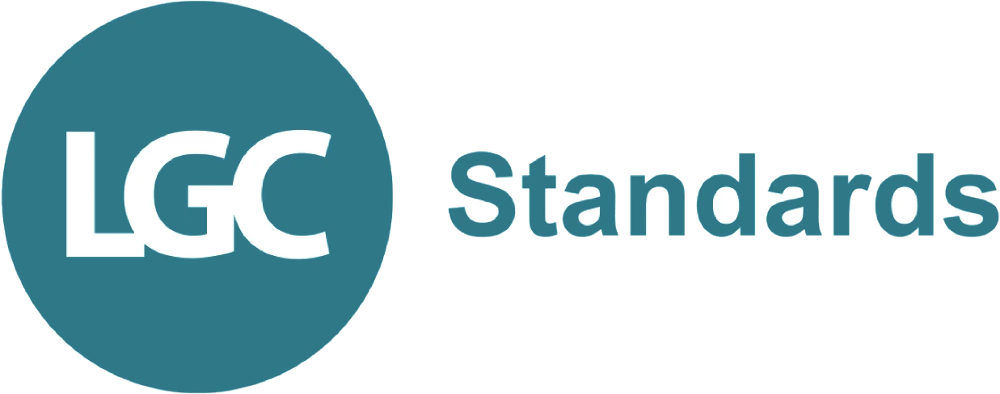

LGC Standards
LGC Standards is the division of the LGC Group, the UK's National Measurement Institute for chemical and bioanalytical measurement. LGC is a leading global manufacturer and service provider for quality assurance and research techniques, supporting the analytical needs of laboratories in more than 120 countries worldwide. Production meets the highest standards, including ranges produced under ISO/IEC 17025 and accredited to ISO 17034. A broad portfolio of reference materials and proficiency testing schemes is complemented by experience in international trade and customs, enabling fast adaptation and tailored solutions for every laboratory's analytical needs.
- Food, beverages and environment
- Pharmaceutical standards and impurities
- Reference materials for clinical and forensic applications
The widest range of reference standards and materials: lgcstandards.com